Paper under double-blind review
TODO: appendix, implementation details, website comparison and ablation videos
One trained model, three rendering modes: 3DGS, mesh asset, and hybrid with physics and shadows.
Relighting
Dynamic Shadows
Physics Contact
Animatable human avatars are central to games, virtual production, telepresence, and AR/VR, and the dominant production format for these settings is a posed mesh with UV-mapped texture, normal, and displacement maps. Mesh-based avatars enjoy decades of engine support: physics, shadows and relighting all assume mesh geometry. Recent 3D Gaussian Splatting (3DGS) avatars deliver markedly higher rendering quality and can be reconstructed from multi-view captures with as few as 10–16 cameras, but their splat representation is incompatible with conventional graphics engines. We present a hybrid pipeline that bridges these two regimes. We train a pose-conditioned avatar with mesh-anchored Gaussian splatting from multi-view video, then, for every training pose, extract three asset maps (texture, normal, displacement) using a UV-space rasterization of the trained Gaussians. At inference time, geometry for a novel pose is produced by the trained network as a posed mesh, while appearance is produced by a pose-space mixture-of-Gaussians blend over the per-pose asset maps. The final output is a textured mesh asset that can be loaded directly into any engine and benefits from physics, dynamic shadows, and relighting, while being comparable in rendering quality to 3DGS avatars. The same model can also be rendered directly as Gaussians, and in a hybrid mode, it is rendered with Gaussians while its mesh, which shares their geometry, serves as a physics and shadow proxy. We evaluate the pipeline on multi-view human captures and show that it produces engine-ready assets whose photometric quality exceeds that of meshes extracted from 3DGS avatars and approaches that of direct renderings of animatable 3DGS avatars.
Our pipeline produces mesh-native assets from multi-view captures. The exported avatar is a standard textured mesh that can be animated with novel poses and loaded into any graphics engine.
Results on ActorsHQ sequences captured with 160 cameras, demonstrating that the pipeline scales to high-camera-count light-stage setups.
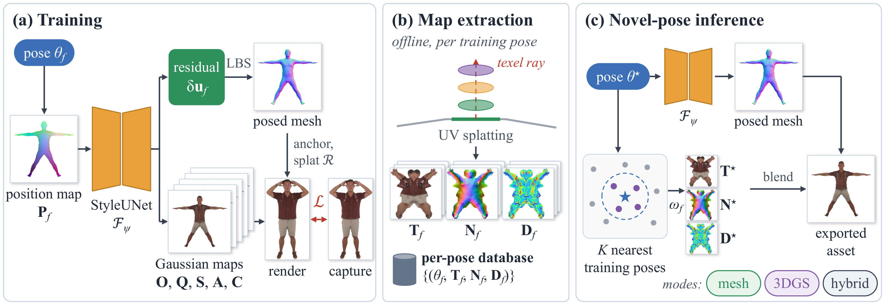
Method overview. We train a pose-conditioned UV-space network that predicts both (i) a vertex residual for the mesh geometry and (ii) per-texel Gaussian attributes (opacity, color, scale, rotation) anchored to the mesh surface. At training time, the model is supervised through Gaussian splatting; once trained, we extract three asset maps (texture, normal, displacement) per pose via UV-space rasterization and blend them at inference with a pose-space mixture of Gaussians. The result is a standard textured mesh compatible with any graphics engine.
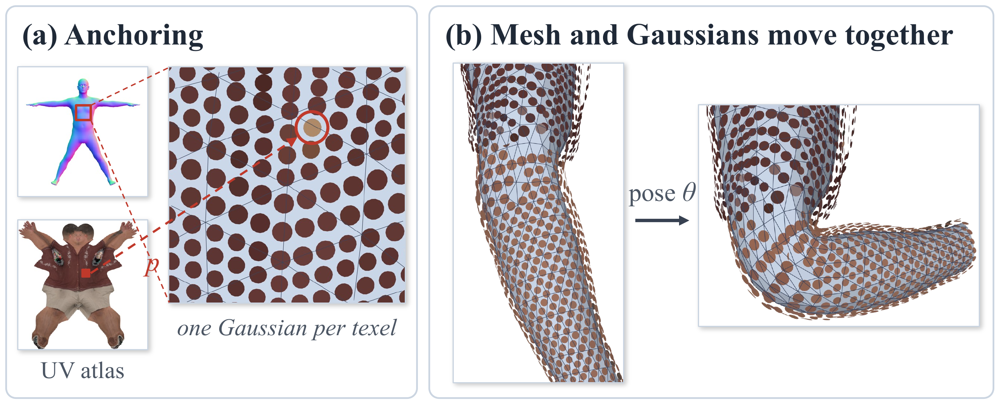
Mesh-anchored Gaussians. Each Gaussian is anchored to a mesh face via barycentric coordinates. This ensures that the Gaussian representation and the mesh share the same geometry, enabling hybrid rendering where Gaussians provide appearance while the mesh provides a valid physics and shadow proxy.
Held-out poses. Our mesh asset preserves pose-dependent wrinkles while AG-Mesh shows seams and blurred texture, and DeMapGS+LBS shows static wrinkles.
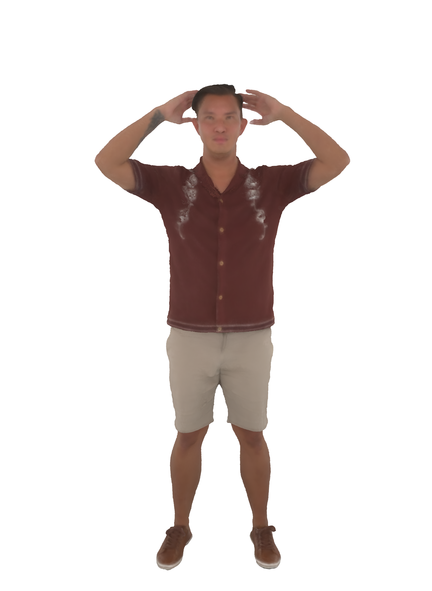
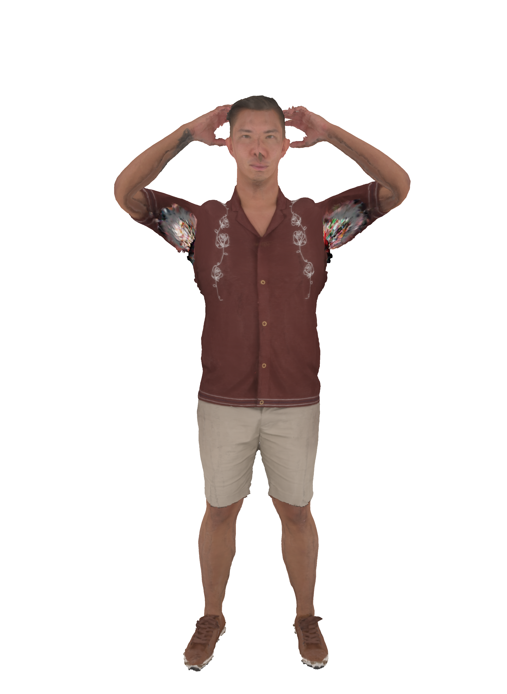
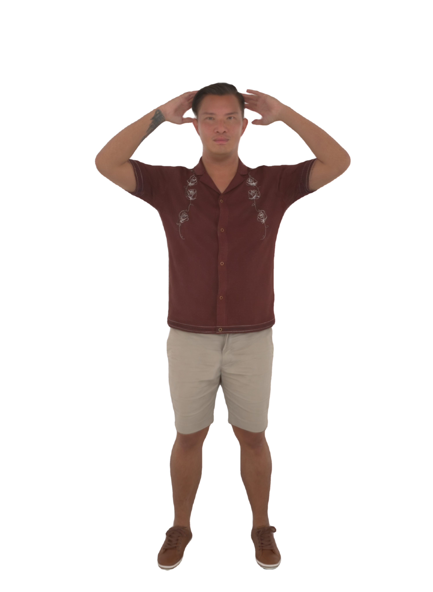
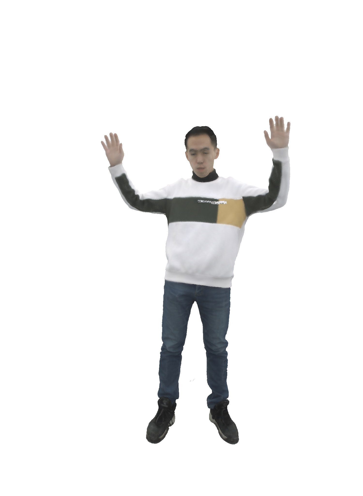
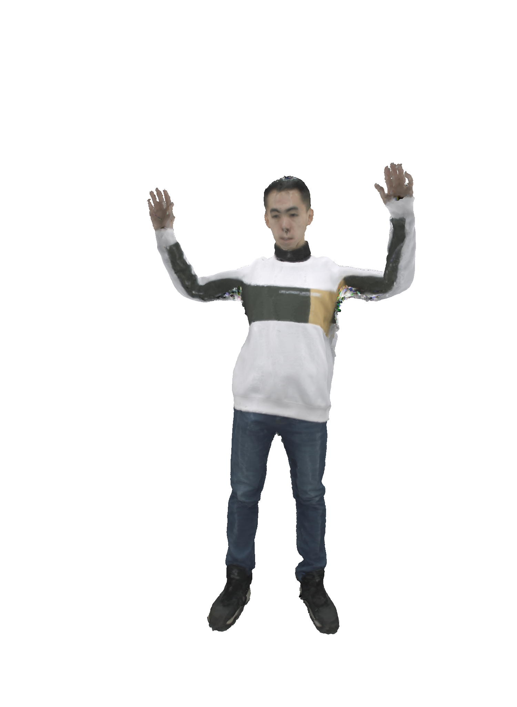
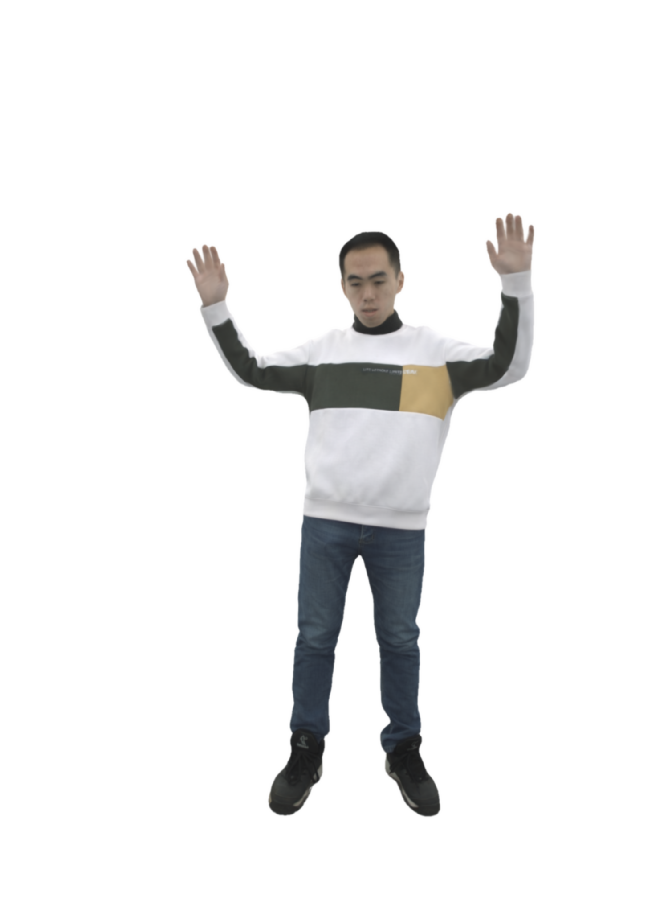
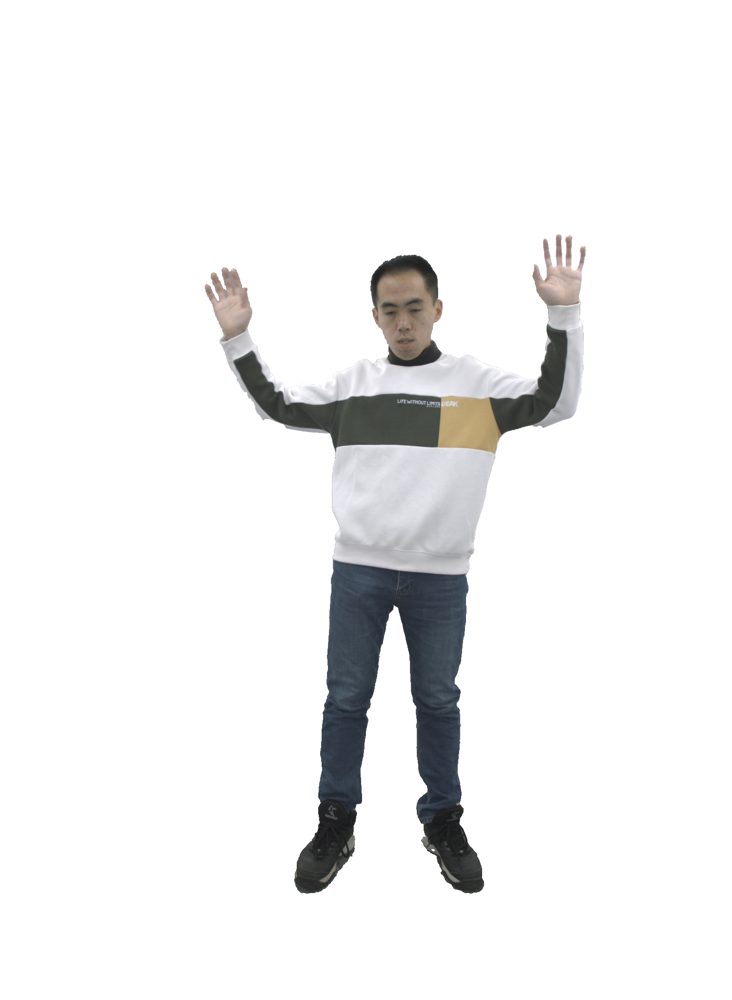
Each column removes one component. Without the vertex residual (LBS only), garment folds are missing; with static asset maps, appearance no longer varies with pose.
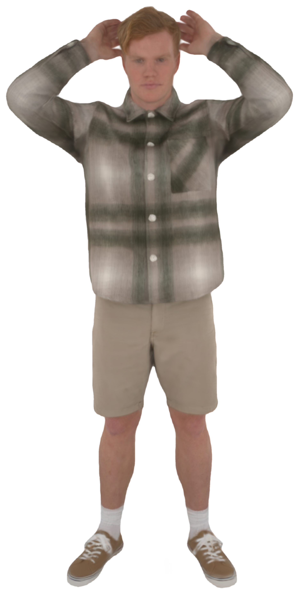
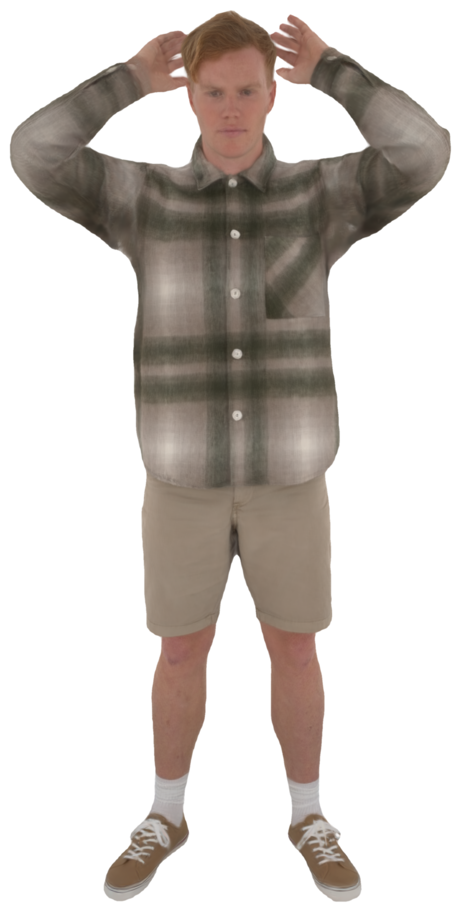
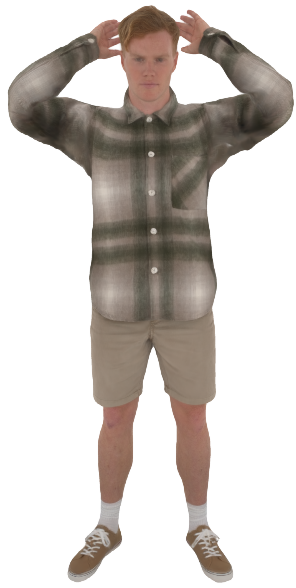
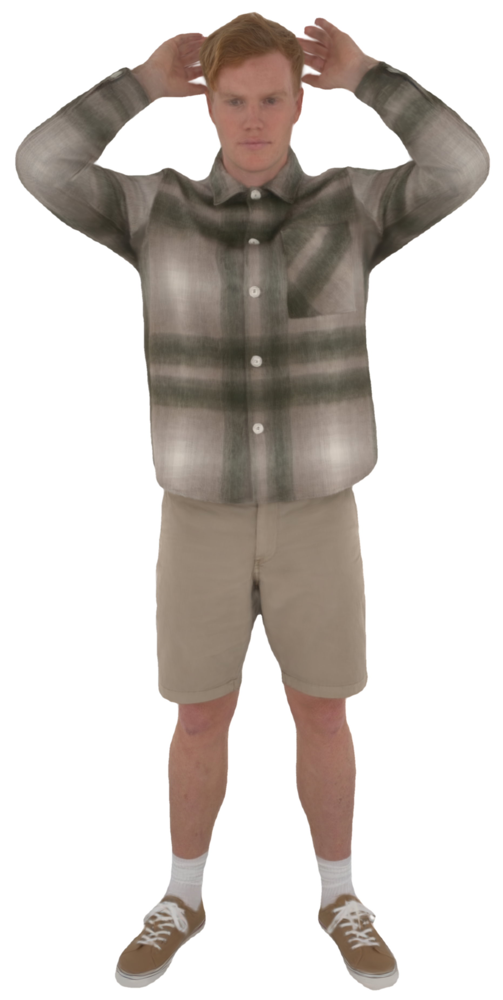
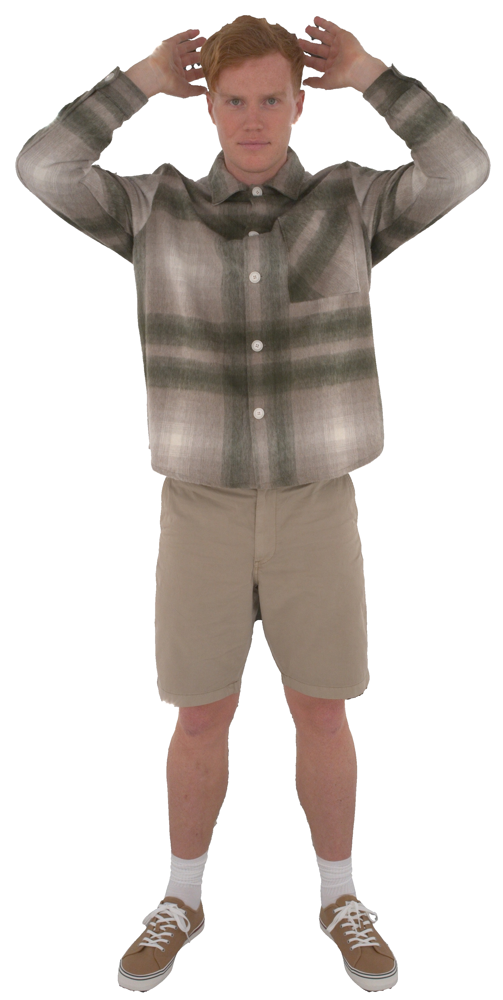
Side-by-side video comparisons with AnimatableGaussians, AG-Mesh, and DeMapGS+LBS on novel poses.
@inproceedings{anonymous2027hybridavatar,
title = {HybridAvatar: Photoreal Animatable Humans as Mesh-Native Assets from Multi-View Cameras},
author = {Anonymous},
booktitle = {International Conference on Learning Representations (ICLR)},
year = {2027},
note = {Under double-blind review}
}